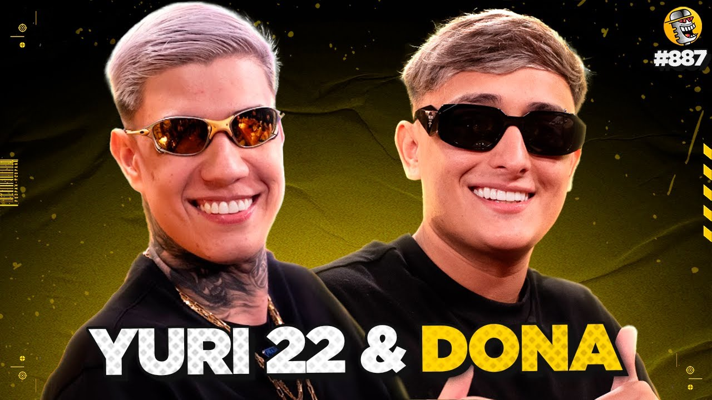

O streamer conhecido com0o Dona19 é um dos criadores de conteúdo brasileiros que cresceram rapidamente no cenário de lives nos últimos anos, especialmente entre o público jovem.
O nome verdadeiro dele é Guilherme Donatangelo. Segundo algumas fontes, ele nasceu em 19 de dezembro de 2003, é brasileiro e mora em São Paulo. Seu bordão mais conhecido é "É OS D", frequentemente usado pela comunidade e pelo próprio Dona.
.jpeg)
Antes de ficar conhecido nas lives, ele era um jovem comum que jogava videogame, usava redes sociais como muitos outros criadores da sua geração e gostava de jogar bola. O canal foi criado em 19 de Julho, na Twitch. Inicialmente, como acontece com muitos streamers brasileiros, Dona fazia transmissões para um público pequeno enquanto construía sua comunidade. Nos primeiros anos, ele transmitia principalmente jogos competitivos, especialmente: Counter-Strike 2 (e anteriormente CS:GO) Conteúdo de conversa com o chat ("Just Chatting") Lives variadas de entretenimento
Em 2024-23, Dona começou a aparecer com mais frequência em cortes de lives, TikTok e outras redes. O conteúdo deixou de ser apenas gameplay e passou a incluir muito mais conversa, humor e momentos divertidos com o chat, algo que costuma gerar maior compartilhamento nas redes sociais. O crescimento foi impulsionado por: Lives praticamente diárias. Forte interação com a comunidade. Presença em conteúdos colaborativos com outros streamers. Disseminação de cortes nas redes sociais.
.jpeg) E em 2025-26, Foi nesse período que Dona entrou em outro patamar.
E em 2025-26, Foi nesse período que Dona entrou em outro patamar.
Dados recentes mostram:
Mais de 656 mil seguidores na Twitch.
100 mil inscritos no Youtube
Ganhos de dezenas de milhares de seguidores em períodos curtos.
Média superior a 6 mil espectadores simultâneos em períodos recentes.
Picos acima de 50 mil espectadores simultâneos, marca alcançada no final de 2025.
Em alguns períodos analisados pelo TwitchTracker, ele chegou a ganhar mais de 20 mil seguidores em apenas 1 mễs, números normalmente associados aos maiores canais brasileiros da plataforma. O que fez o Dona crescer tanto? Entre os fatores mais importantes: Personalidade forte Humor espontâneo. Linguagem próxima do público jovem. Bordões e memes próprios da comunidade. Consistência Rotina frequente de transmissões. Horários relativamente estáveis. Conteúdo além dos jogos O público passou a assistir pelo criador, não apenas pelo jogo. Crescimento na categoria "Just Chatting". Cortes e redes sociais TikTok, Instagram e YouTube ajudaram a levar novos espectadores para as live
.jpeg) A amizade e separação com Yuri22
A amizade e separação com Yuri22
A amizade entre Dona19 e Yuri22 era uma das mais famosas do cenário de streamers e influenciadores brasileiros. Conhecidos como figuras de destaque em jogos mobile (como Mobile Legends e Free Fire) e membros da "Tropa do Goti", a antiga forte parceria entre os dois gerou momentos icônicos, viagens internacionais, e até uma participação de destaque no Podpah #887.

A dupla participou de uma entrevista memorável no Podpah #887. Durante o episódio, eles contaram a história de como se conheceram, relembraram momentos engraçados juntos, e aprofundaram os detalhes da dinâmica caótica e divertida da amizade deles fora das lives.A separação da dupla, Dona19 e Yuri22 aconteceu por meio de conflito com casas de apostas, onde Yuri22 conseguiu um contrato para cada um da Tropa do Goti,com Dona sendo um dos que mais ganharia dinheiro, cerca 600 mil Reais por mês para divulgar o cassino em suas lives.Mais Dona não aceitou pois achou que 600 mil não o sustentaria. Então recebeu uma proposta de outra casa de aposta, que pagaria 1 milhão por cada live que divulgasse, ele pensou e aceitou. Yuri22 ficou furioso com Dona, eles brigaram e terminaram a amizade, e assim a amizade mais famosa da internet no mundo dos Streamers chegou ao fim.
Com isso veio um dos seus apelidos mais conhecidos "Judas19" e segue ate hoje recebendo esse apelidos no chat em suas lives. E com isso também Dona perdeu muitos seguidores e views em suas lives, e isso prejudicou muito Dona, sendo que Yuri22 dobrou seus views em suas lives apos a treta entre os dois.
Mais Dona agora segue sua vida com sua namorada e seus amigos, e comprou um apartamentos para todos morar juntos. Mesmo recebendo poucos views em suas lives e ate xingamentos, Dona não parou de fazer o que sempre amou, fazer lives. Abre lives quase todos os dias na Twitch faz resenha, reacts, joga jogos, se diverte e faz suas divulgações em cassino.
.jpeg)